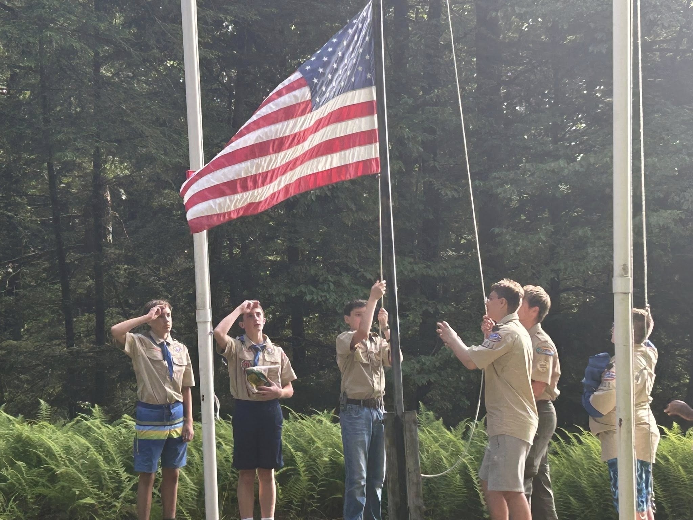
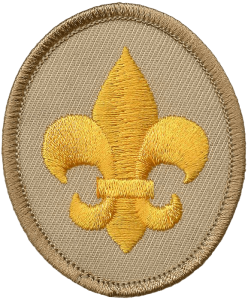
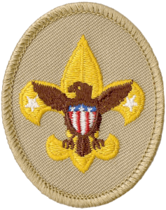
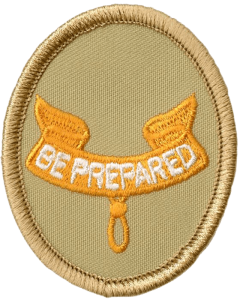
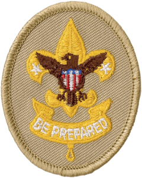
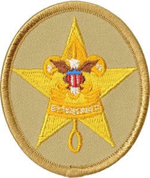
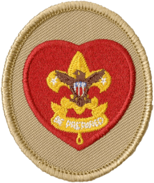
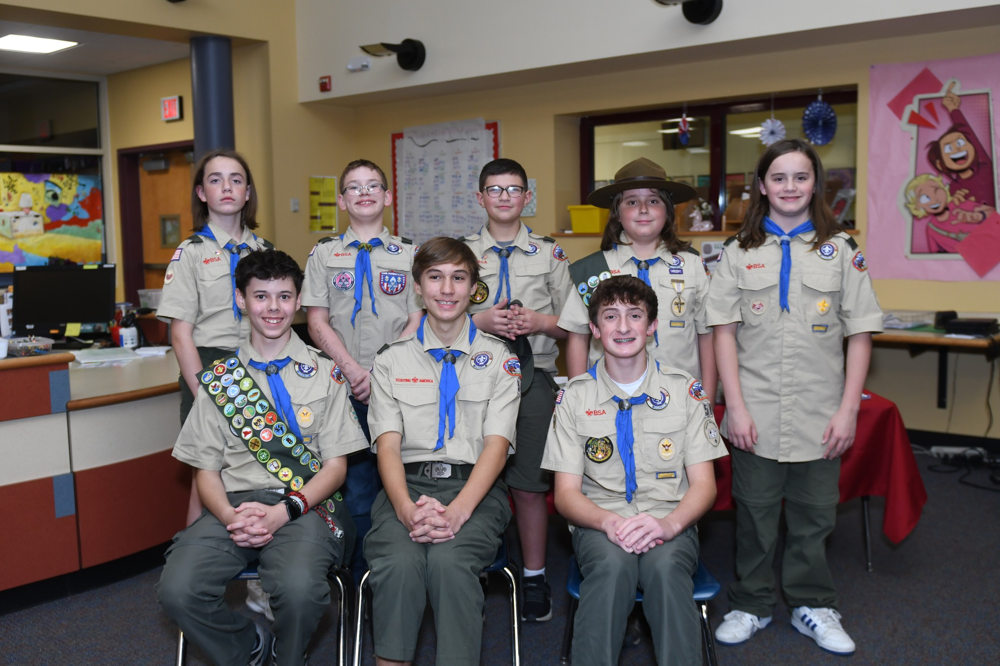

About Troop 54
Rooted in Rotterdam, dedicated to building character and leadership in every Scout who walks through our doors.
Our Story
A tradition of adventure and service in Rotterdam
Founded in the 1950s, Troop 54 has been a cornerstone of Scouting in the Rotterdam area for over seven decades. Sponsored by the Schalmont PTO and supported by the Twin Rivers Council, our troop has helped generations of young people discover the outdoors, develop leadership skills, and become engaged members of their community.
From our earliest campouts to producing Eagle Scouts who go on to serve their communities and country, Troop 54 carries forward the proud tradition of Scouting America. Today, as a family troop welcoming both boys and girls, we're writing the next chapter of that story - and there's room for your family in it.

Our Leaders
Dedicated volunteers who guide our Scouts every step of the way
William Mau
Committee Chair
The Committee Chair oversees the troop's administrative operations, coordinates with the chartering organization, manages the budget, and ensures the troop runs smoothly so leaders can focus on delivering the Scouting program.
Julie Yanson
Scoutmaster
The Scoutmaster is the troop's lead adult mentor, guiding Scouts through the program by training youth leaders, planning outdoor activities, and helping each Scout progress along the trail to Eagle.
Assistant Scoutmasters
Assistant Scoutmasters support the Scoutmaster by mentoring patrols, leading skill instruction, supervising outings, and stepping in to ensure every Scout gets the attention they need.
Kyle Stark
Harry O'Connell
Barbara Potter
Dave Lawrence
Committee Members
Committee Members handle the behind-the-scenes work that keeps the troop running — from organizing fundraisers and coordinating transportation to managing equipment and supporting troop events.
Laurinda O'Connell
Jackie Stark
Jay Lawrence
What Is Scouting America?
A proven program for developing character, citizenship, and fitness
Scouting America (formerly the Boy Scouts of America) is one of the nation's largest and most prominent values-based youth development organizations. Since 1910, Scouting has helped millions of young people develop leadership, outdoor skills, and a commitment to serving others.
The Scouts BSA program serves youth ages 11-17 through a system of ranks, merit badges, and outdoor experiences. Scouts advance through seven ranks, culminating in the prestigious Eagle Scout rank - achieved by less than 6% of all Scouts.
The Path to Eagle

Scout
Tenderfoot
Second Class
First Class
Star
LifeOur Values
The Scout Oath and Scout Law guide everything we do
The Scout Oath
On my honor I will do my best to do my duty to God and my country and to obey the Scout Law; to help other people at all times; to keep myself physically strong, mentally awake, and morally straight.
The Scout Law
A Scout is trustworthy, loyal, helpful, friendly, courteous, kind, obedient, cheerful, thrifty, brave, clean, and reverent.
A Family Troop
Troop 54 is a Family Troop, an official model supported by Scouting America that allows both male and female Scouts to be part of the same troop under one charter and one committee. Siblings and friends can share the Scouting experience together.
All Scouts in our troop participate in the same activities, earn the same ranks, from Scout to Eagle, and go on the same campouts and high-adventure trips. Per Scouting America policy, patrols within the troop remain single-gender, but the troop operates as one unified team. Our leadership training, service projects, and outdoor programs are fully inclusive.
Being a family troop also means our parent community is deeply connected. When families can be involved together, the entire troop benefits from stronger engagement, more volunteers, and a richer program for everyone.

Ready to Join the Adventure?
Whether you're brand new to Scouting or transferring from another troop, there's a place for you in Troop 54.
Part of Twin Rivers Council, Scouting America